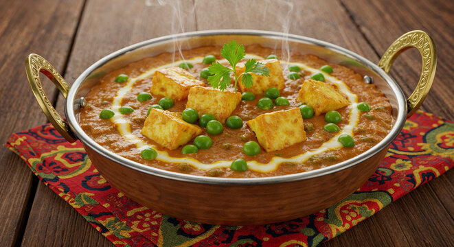

MATAR PANEER
home

Description
Matar Paneer is a classic North Indian dish featuring a flavorful medley of sweet green peas (matar) and soft paneer cheese.
These two main elements are simmered together in a rich, spiced tomato-based gravy that traditionally starts with a fragrant aromatic base of onions,
ginger, and garlic.
The dish perfectly balances contrasting textures and rich flavors, offering a delicate sweetness from the fresh peas alongside
the creamy mildness of the paneer.
Warmly spiced with staples like turmeric, garam masala, and chili, it is usually finished with a splash of cream and a garnish of fresh cilantro.
It is most commonly served hot alongside flatbreads like roti, naan, or fluffy basmati rice
Ingredients
- Paneer (cottage cheese cubes, usually 200g - 400g)
- Green Peas (matar, fresh, thawed, or boiled)
- Onions (finely chopped or blended into a paste)
- Tomatoes (chopped, pureed, or canned)
- Ginger & Garlic (minced or made into a paste)
- Green Chilies for heat
- Cashews (soaked and blended into a paste)
- Oil or Ghee (or butter) for sautéing
- Cumin seeds (jeera)
- Bay leaf (tej patta)
- Cardamom (elaichi), cinnamon, and cloves
- Turmeric powder (haldi)
- Kashmiri red chili powder or regular chili powder
- Coriander powder (dhania)
- Garam masala
- Salt (to taste)
- Dried fenugreek leaves (kasuri methi)
- Fresh coriander leaves (cilantro)
Steps
- Heat 1 tablespoon of oil or ghee in a pan and sauté 1 chopped large onion, 1 inch of ginger, and 4 to 5 garlic cloves until soft.
- Add 2 large chopped tomatoes and 10 to 12 whole cashews, then cook until the tomatoes turn mushy.
- Let the mixture cool completely, then blend it with a splash of water into a smooth paste.
- Cut 200 grams of paneer into cubes. Optionally, lightly fry them and soak them in warm water for 10 minutes to keep them soft.
- Heat 1.5 tablespoons of oil or ghee in the same pan, then add 1 teaspoon of cumin seeds and 1 bay leaf until they sizzle.
- Lower the heat, pour in the blended onion-tomato-cashew paste, and stir well.
- Stir in 1/2 teaspoon of turmeric, 1 teaspoon of Kashmiri red chili powder, and 1 teaspoon of coriander powder.
- Sauté the mixture on low-medium heat for 5 to 7 minutes until the masala thickens and oil starts to separate from the sides.
- Add 1 cup of green peas, 1 to 1.5 cups of water, and salt to taste, then cover and cook for 5 minutes until the peas are tender.
- Gently drop in the paneer cubes and stir carefully so they do not break.
- Cover and let it simmer on low heat for another 3 to 4 minutes so the paneer absorbs the flavours.
- Sprinkle 1/2 teaspoon of garam masala and 1 tablespoon of crushed kasuri methi over the curry.
- Turn off the heat and stir in 2 tablespoons of fresh cream or malai for extra richness.
- Garnish the top with finely chopped fresh coriander leaves